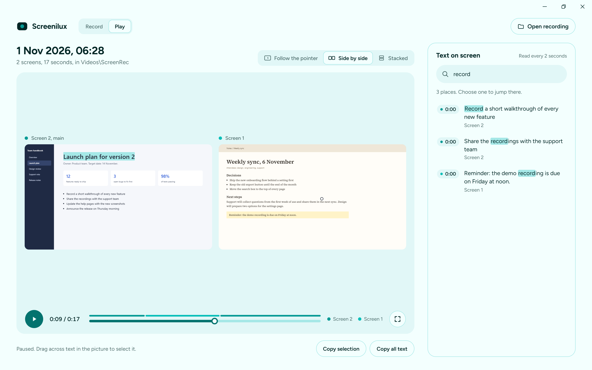
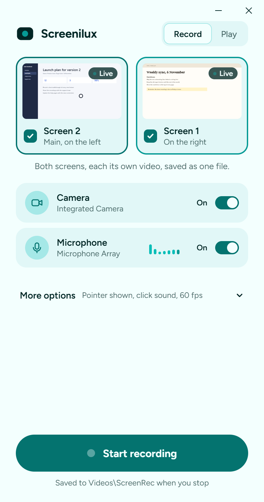
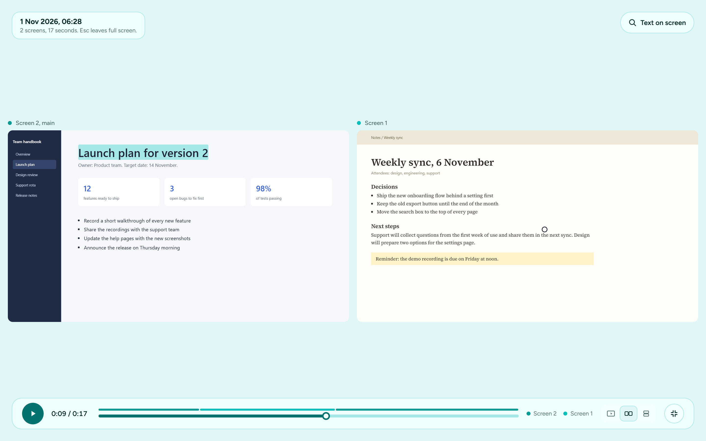

Record every screen.Cut it into a demo.
Screenilux records all your monitors at once, each as its own sharp video, and plays them back in step. Then you shape what you caught into something worth sending — without a track for every kind of thing.

Every screen, in step

Most recorders capture one screen, or squeeze several into one wide, blurry video. Screenilux records each screen at its full size and keeps them on one clock, so playback can follow your pointer from one to the next.
Your voice and what the computer plays, mixed or separate. A camera bubble you can drag anywhere, even mid-recording. Pause and the paused time never reaches the file. Plug a screen in and the list finds it.
While you record, the window shrinks to a small bar that stays out of the video.
Two ways to change it
Editing a demo is two questions: where and when. So there are two places to answer them. Click the picture to put an effect where you are pointing. Drag the timeline to pick a stretch and say what happens to it.
Nothing is written into the recording. Effects are kept beside it and drawn on the way out, so any of them comes off again by deleting it.
- Click the pictureZoom, spotlight, blur, hide, or point at something
- Drag the trackCut, speed up, hold a frame, caption, or mute the stretch
Send it as a picture, or a link
A GIF plays by itself, needs no player, and survives being pasted into a README, a pull request or a chat. Screenilux writes one that only carries what moved between frames, which is most of why it stays small.
Or share a link. The recording is encrypted on your computer first and the key is part of the link, so neither Screenilux nor whoever stores the file can open it. The people you send it to watch every screen in a browser, with nothing to install.

Get it
One file to unzip and run. Recordings are ordinary MP4s you can keep, move and open anywhere.
Or build it yourself:
# Rust 1.95 or newer
git clone https://github.com/screenilux/screenilux
cd screenilux
cargo run --release -p screenilux